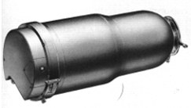
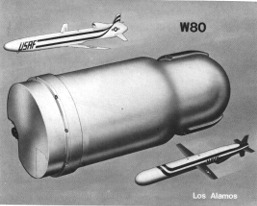
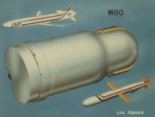
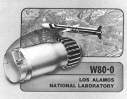
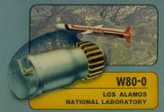
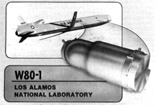
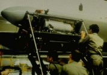
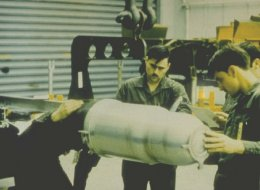

Last updated 29 August 2007
|  |  |  |
| Three slightly views of the W80, mod not identified. | ||
|  |  Click for large color version |
 |
| W80-0 Mod | W80-1 Mod | |
|---|---|---|
|  ALCM being loaded |
 W80 being handled on the ground | |
The warhead proper is nearly identical in both the Mod 0 and Mod 1. There are some differences in the design of the fission primary (different grades of plutonium used, some differences in the high explosive assembly), and in the mounting and installation hardware for the different cruise missile bodies, but in little else.
The W80 is the warhead used on the three cruise missiles currently in the U.S. arsenal - the Mod 0 with the BGM-109 Tomahawk SLCM (sea launched cruise missile), the Mod 1 with the AGM-86B ALCM (air launched cruise missile) and the AGM-129 ACM (advanced cruise missile, an air launched weapon incorporating stealth technology). It is a light weight variable yield warhead.
| Available Yields (kt) | 5 / 150 |
|---|---|
| Weight | 290 lbs |
| Length | 31.4 in |
| Diameter | 11.8 in |
| Number In Active Service | Mod 0 (SLCM) 100 Mod 1 (ALCM) 1000 Mod 1 (ACM) 450 |
Two stage radiation implosion thermonuclear weapon.
The W80 is based on the W61 design, so the exterior appearance of the two warheads is probably very similar (if not identical). This is also true of other B61 derivatives: the W84 (in the inactive stockpile), the W81 (no longer in existence), and the W85 (converted to the B61).
The 5 kiloton low yield option presumably represents the boosted primary yield alone, while the high yield adds the full secondary yield . The lowest yield option available for the B61, 0.3 kt, is not available with the W80, presumably because a yield this low is of no strategic interest.
Arming and fuzing system weighs 10 pounds.
Here is a speculative interpretation of the design:
Primary Fissile Material:
Cruise missile, which may be launched by submarine, surface-ship, or aircraft (depending on mod and basing mode). Aircraft for the ALCM is now the B-52H and the B-2 Spirit. SLCMs are now slated for use on 26 Sturgeon-class, 62 Los Angeles-class, and 3 Sea Wolf-class submarines.
See Principles of Nuclear Weapons Security and Safety for explanations of these features.
Supergrade plutonium (which has low neutron emissions) is used in the Mod 0 to reduce occupational radiation exposure to submarine crews who are in close proximity to the weapons for long periods of time while on patrol.
Unknown
Designed and developed by Los Alamos National Laboratory (LANL)
This warhead suffered from an extremely serious problem that was not discovered until after production began. Since the ALCM is carried externally at high altitudes for inter-continental delivery, it is subjected to sub-freezing temperatures for long periods of time. Although PBX-9502 test samples had been fired at temperatures of -65 degrees, and the entire electrical system had been tested in sub-freezing environmental chambers, proof testing of an entire chilled warhead did not occur until after production began.
When a complete W80 was subjected to a low-temperature test in the Baseball shot (Operation Guardian) on 15 January 1981 20:25:00.90 (UCT), it gave only a fraction of the rated yield due to problems with the IHE. Further investigation showed that other B61 family warheads using IHE also suffered from this problem to varying degrees. Redesign and a second proof test (Jornada in Operation Praetorian, 28 January 1982 16:00:00.104 UCT) at -65 degrees F were required to resolve the problem.
| June 1976 | Development engineering begun at LANL (both mods) |
|---|---|
| January 1979 | Production engineering on W80-1 begins |
| January 1981 | First production units of the W80-1 completed |
| September 1981 | Initial deployment of ALCM with W80-1 |
| February 1982 | Quantity production of the W80-1 begins (after resolving the low temperature firing problem) |
| March 1982 | Production engineering on W80-0 begins |
| December 1983 | First production units of the W80-0 completed |
| March 1984 | Quantity production of the W80-0 begins |
| September 1990 | Production of both the W80-0 and W80-1 completed by this date |
Initial manufacture of W80-1 was January 1981
Initial deployment of W80-1 on ALCM was September 1981
Initial manufacture of W80-0 was December 1983
Initial deployment of W80-0 on SLCM was 1984
Initial deployment of W80-1 on ACM was 1991
1750 W80-1 warheads have been manufactured.
367 W80-0 warheads have been manufactured.
Currently in service (active stockpile):
1000 W80-1 on ALCM
450 W80-1 on ACM
100 W80-0 on SLCM (now stored ashore, none are normally deployed on ship)
Inactive:
361 W80-1
194 W80-0
Conversions and Retirements:
{kind=link}
{kind=link}
{kind=link}
{kind=link}